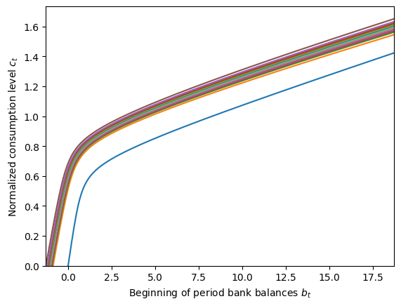
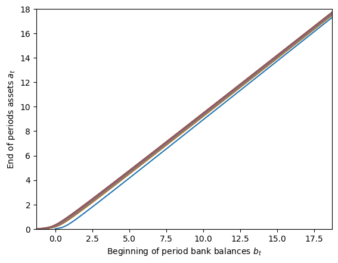

Interactive online version:
Intensive Margin Labor Supply Choice#
Most models in HARK assume that labor is supplied exogenously and inelastically. In fact, most don’t even have any measure of “how much” labor an individual is providing; they simply receive labor income according to some stochastic process.
The LaborIntMargConsumerType is HARK’s first AgentType subclass in which labor supply is modeled as a control variable for the consumers. Working more generates more income to be spent on consumption, but is dispreferred in the present because the agents value leisure. In this model, the agent can choose labor as a continuous variable on the intensive margin (including not working at all).
[1]:
from time import time
import matplotlib.pyplot as plt
import numpy as np
from HARK.models import LaborIntMargConsumerType
mystr = lambda number: f"{number:.4f}" # Format numbers as strings
\(\newcommand{\CRRA}{\rho}\) \(\newcommand{\LivPrb}{\mathsf{S}}\) \(\newcommand{\PermGroFac}{\Gamma}\) \(\newcommand{\Rfree}{\mathsf{R}}\) \(\newcommand{\DiscFac}{\beta}\) \(\newcommand{\LbrCost}{\alpha}\) \(\newcommand{\WageRte}{\mathsf{w}}\) \(\newcommand{\Lbr}{\ell}\) \(\newcommand{\Lsr}{z}\)
Intensive Margin Labor Supply Model Statement#
Each period, the agent chooses how much to consume \(c_t\) versus save in assets \(a_t\), as well as how much to work as labor \(\Lbr_t\). They have a fixed time budget of \(1\) unit, and any time not spent on labor is allocated to leisure \(z_t\) instead. They have CRRA risk preferences over consumption, but their “effective consumption” is scaled down based on their leisure time– consumption is only fun if you have the time to enjoy it! As in most HARK models, the agent can save in a single risk-free asset.
The agent’s labor productivity is subject to permanent \(\psi_t\) and transitory \(\theta_t\) shocks. The model assumes that the labor market is perfectly competitive, so the agent is paid income \(y_t\) based on their “effective labor units” supplied at wage rate \(\WageRte_t\). Under these assumptions, the model is homothetic with respect to permanent labor productivity, so it can be “normalized out” of the model.
The normalized model can be expressed in Bellman form as:
\begin{align*} \text{v}_t(b_t, \theta_t) &= \max_{c_t, \Lbr_t} u(x_t) + \DiscFac \LivPrb_t \mathbb{E}_{t} \left[ (\PermGroFac_{t+1}\psi_{t+1})^{1-\CRRA} \text{v}_{t+1}(b_{t+1}, \theta_{t+1}) \right] \\ &\text{s.t.} \\ y_t &= \Lbr_t \theta_t \WageRte_t, \\ m_t &= b_t + y_t, \\ a_t &= m_t - c_t, \\ a_t &\geq 0, \\ \Lsr_t &= 1 - \Lbr_t, \\ x_t &= \Lsr_t^{\LbrCost_t} c_t, \\ \Lbr_t &\geq 0, \\ b_{t+1} &= \Rfree_{t+1}/(\PermGroFac_{t+1} \psi_{t+1}) a_t, \\ (\psi_{t+1},\theta_{t+1}) &\sim F_{t+1}, \\ \mathbb{E}[\psi] &= 1, \\ u(x) &= \frac{x^{1-\rho}}{1-\rho}. \end{align*}
In this model, the decision-time state includes current bank balances \(b_t\) as well as the transitory productivity shock \(\theta_t\). That is, their current productivity is informative about how much they will earn from supplying marginal labor; the permanent component of the shock has already been incorporated into their normalized state. Market resources \(m_t\) are usually the decision-time state variable in other HARK models, but in this model it is merely an “intermediate” state used for accounting purposes and comparability to other models.
NB: The borrowing constraint \(a_t \geq 0\) is currently hardwired into this model, but this restriction will be lifted in the future. Until this is resolved, please ensure that there is a positive probability of \(\theta_t = 0\) in your calibration, so that the natural borrowing constraint is also \(a_t \geq 0\).
“Effective consumption” \(x_t\) is ordinary consumption \(c_t\) scaled down by the factor \(\Lsr_t^{\LbrCost_t}\). The parameter \(\LbrCost_t\) represents how costly providing labor is from a utility standpoint. Because \(\Lbr_t \in [0,1]\), for any \(\LbrCost_t > 0\), the scaling factor \(\Lsr_t^{\LbrCost_t}\) is also on the unit interval: consumption is less valuable when the agent has little leisure time to enjoy it.
Solving the Labor Supply Model#
As usual in HARK, the intensive margin labor supply model is solved by the endogenous grid method (EGM).
End of period (marginal) value#
To start, we define the end-of-period value function. The model has two controls, but only one relevant end-of-period state: assets \(a_t\).
\begin{align*} \mathfrak{v}_t(a_t) &= \DiscFac \LivPrb_t \mathbb{E}_{t} \left[ (\PermGroFac_{t+1}\psi_{t+1})^{1-\CRRA} \text{v}_{t+1}(b_{t+1}, \theta_{t+1}) \right] \\ &\text{s.t.} \\ b_{t+1} &= \Rfree_{t+1}/(\PermGroFac_{t+1} \psi_{t+1}) a_t, \\ (\psi_{t+1},\theta_{t+1}) &\sim F_{t+1}. \\ \end{align*}
Likewise, the marginal value of end-of-period assets is:
\begin{equation*} \mathfrak{v}_t'(a_t) = \Rfree_{t+1} \DiscFac \LivPrb_t \mathbb{E}_{t} \left[ (\PermGroFac_{t+1}\psi_{t+1})^{-\CRRA} \text{v}_{t+1}^b(b_{t+1}, \theta_{t+1}) \right]. \end{equation*}
The end-of-period value function can be substituted into the Bellman form (and some of the “intermediate equations” collapsed) to yield a simplified “EGM form”:
\begin{align*} \text{v}_t(b_t, \theta_t) &= \max_{c_t, \Lbr_t} ~ \frac{((1-\Lbr_t)^{\LbrCost_t} c_t)^{1-\rho}}{1-\rho} + \mathfrak{v}_t(a_t) \\ &\text{s.t.} \\ a_t &= b_t + \Lbr_t \theta_t \WageRte_t - c_t, \\ a_t &\geq 0, \\ \Lbr_t &\geq 0. \\ \end{align*}
First order conditions: take 1#
We can now take the derivative of the maximand with respect to each of the controls to yield the first order conditions for optimality (assuming an interior solution):
\begin{align*} \text{FOC-c:} ~~ & u^c(c_t,\Lbr_t) - \mathfrak{v}_t'(a_t) = 0. \\ \text{FOC-l:} ~~ & u^\Lbr(c_t,\Lbr_t) + \theta_t \WageRte_t \mathfrak{v}_t'(a_t) = 0. \end{align*}
One approach to solve the model is thus to set a grid of \(a_t\) and a discretization of \(\theta_t\) and then solve this non-linear system of first order conditions. That works, but it turns out there’s an algebraic rearrangement that makes the model easier to solve.
Restructuring the problem#
First, define \(\lambda_t = \frac{1}{1 + \alpha_t}\), and rearrange the utility function as:
\begin{equation*} \hat{u}(c_t,\Lsr_t) \equiv \frac{(\Lsr_t^{1-\lambda_t}c_t^{\lambda_t})^{(1-\CRRA)(1+\alpha_t)}}{1-\CRRA} = \frac{(\Lsr_t^{1-\lambda_t}c_t^{\lambda_t})^{1-(\CRRA - \alpha_t + \CRRA \alpha_t)}}{1-\CRRA}. \end{equation*}
The expression inside the exponentiation is an alternative expression for effective consumption \(x_t\) as a Cobb-Douglas aggregation of leisure and consumption. The “effective risk aversion” is rescaled to account for the change of exponents inside the exponentiation.
NB: Note that the revised utility function looks like it has a risk aversion coefficient of \(\CRRA - \alpha_t + \CRRA \alpha_t\) over effective consumption \(x_t\). In order for the model to behave sensibly, the agent must still be risk averse with respect to \(x_t\), so \(\CRRA - \alpha_t + \CRRA \alpha_t > 0 \Longrightarrow \CRRA(1+\alpha_t) > \alpha_t \Longrightarrow \CRRA > \alpha_t / (1+\alpha_t)\). This is always satisfied when \(\CRRA \geq 1\), but is sometimes violated for \(\CRRA < 1\).
Now rephrase the agent’s problem from deciding how much labor to supply to instead how much leisure to purchase. That is, momentarily assume the agent is supplying \(\Lbr_t = 1\), and has total market resources of:
\begin{equation*} \overline{m}_t = b_t + \theta_t w_t. \end{equation*}
The equivalent problem is now to “purchase” consumption \(c_t\) and leisure \(\Lsr_t\) to produce effective consumption, where consumption has a price of 1 and leisure has a price of \(\WageRte_t \theta_t\)– the labor income the agent will forgo.
\begin{align*} \text{v}_t(b_t, \theta_t) = \hat{\text{v}}_t(\overline{m}_t, \theta_t) &= \max_{c_t,\Lsr_t} \frac{x_t^{1-(\CRRA - \alpha_t + \CRRA \alpha_t)}}{1-\CRRA} + \mathfrak{v}_t(a_t) \\ & \text{s.t.} \\ x_t &= \Lsr_t^{1-\lambda_t}c_t^{\lambda_t}, \\ a_t &= \overline{m}_t - c_t - \theta_t \WageRte_t \Lsr_t, \\ a_t &\geq 0, \\ \Lsr_t &\leq 1. \end{align*}
The cost-minimization problem for effective consumption#
With the problem rearranged in this form, we can now see that the agent’s problem is to make choices to balance the utility of “effective consumption” \(x_t\) today against the value of retaining assets \(a_t\) for the future. However much \(x_t\) the agent chooses, they want to minimize their expenditure on \(x_t\). Because effective consumption is produced as a Cobb-Douglas aggregation of \(c_t\) and \(\Lsr_t\) and the “prices” are constant, then we know that the agent will want to use a constant fraction of their spending on \(c_t\) and \(\Lsr_t\), and there is a constant marginal cost of acquiring more \(x_t\).
In particular, the marginal cost of buying a unit of effective consumption \(x_t\) is:
\begin{equation*} \varphi_t = \left(\frac{\WageRte_t \theta_t}{1-\lambda_t} \right)^{1-\lambda_t} \left( \frac{1}{\lambda_t} \right)^{\lambda_t}. \end{equation*}
If the agent buys \(x_t\) units of effective consumption, spending \(\varphi_t x_t\) in total, the optimal quantities of \(c_t\) and \(\Lsr_t\) are:
\begin{align*} c_t &= \lambda_t \varphi_t x_t, \\ \Lsr_t &= (1-\lambda_t) \varphi_t x_t / (\theta_t \WageRte_t). \end{align*}
Reduced problem: Solving for optimal effective consumption#
The two control variable problem is thus reduced to a simple one control variable problem: \begin{align*} \hat{\text{v}}_t(\overline{m}_t, \theta_t) &= \max_{x_t} \frac{x_t^{1-(\CRRA - \alpha_t + \CRRA \alpha_t)}}{1-\CRRA} + \mathfrak{v}_t(a_t) \\ & \text{s.t.} \\ a_t &= \overline{m}_t - \varphi_t x_t. \\ \end{align*}
This problem has a single first order condition for optimality:
\begin{equation*} \frac{1-(\CRRA - \alpha_t + \CRRA \alpha_t)}{1-\CRRA} x_t^{-(\CRRA - \alpha_t + \CRRA \alpha_t)} - \varphi_t \mathfrak{v}_t'(a_t) = 0. \end{equation*}
This expression can be directly solved for \(x_t\):
\begin{align*} x_t &= \left( \frac{\varphi_t(1-\CRRA)}{1-(\CRRA - \alpha_t + \CRRA \alpha_t)} \mathfrak{v}_t'(a_t) \right)^{-1/(\CRRA - \alpha_t + \CRRA \alpha_t)} \\ \Longrightarrow x_t &= \left( \frac{1-(\CRRA - \alpha_t + \CRRA \alpha_t)}{\varphi_t(1-\CRRA)} \right)^{1/(\CRRA - \alpha_t + \CRRA \alpha_t)} \cdot \mathfrak{v}_t'(a_t)^{-1/(\CRRA - \alpha_t + \CRRA \alpha_t)}. \end{align*}
The factoring in the second line makes it clear that inverting the first order conditions for this model is computationally barely more difficult than in the standard ConsIndShockModel. Note that the first factor depends only on \(\theta_t\) (through \(\varphi_t\)) and on model parameters; likewise, the second factor depends only on \(a_t\) and model parameters and risk. Thus when solving the model, we can calculate the first factor on a grid of \(\theta_t\) values and
the second factor on a grid of \(a_t\) values, and then calculate the outer product of the two vectors to generate \(x_t\) for the tensor grid of \((a_t, \theta_t)\) end-of-period states.
Once \(x_t\) is known for any given \((a_t,\theta_t)\), the optimal controls can be recovered using the expressions for \(c_t\) and \(\Lsr_t\) above (from the “cost-minimization” problem), as well as the time budget constraint \(\Lbr_t = 1 - \Lsr_t\). The endogenous \(b_t\) gridpoint from which these controls must have been chosen can then be found by inverting the intraperiod budget constraint:
\begin{equation*} b_t = a_t + c_t - \Lbr_t \theta_t \WageRte_t. \end{equation*}
“Leisure-constrained” solution#
A savvy reader might notice that we have completely neglected the time budget constraint, and that there is no guarantee that the \(\Lbr_t\) generated from this math will be non-negative (more directly, there is no guarantee that \(\Lsr_t \leq 1\)). For any pairs \((a_t, \theta_t)\) for which the first order conditions imply that \(\Lsr_t > 1\), we instead set \(\Lsr_t = 1\) and thus \(\Lbr_t = 0\)– the agent did not work.
When “leisure constrained” like this, there is effectively only one first order condition, for consumption. In fact, when \(\Lbr_t=0\), the model reduces to the standard consumption-saving problem (but with no income). Substituting \(\Lbr_t = 0\) in the EGM form of the problem and removing it as a control variable, we have:
\begin{align*} \text{v}_t(b_t, \theta_t) &= \max_{c_t} ~ \frac{c_t^{1-\rho}}{1-\rho} + \mathfrak{v}_t(a_t) \\ &\text{s.t.} \\ a_t &= b_t - c_t, \\ a_t &\geq 0. \\ \end{align*}
This simpler problem has the standard EGM solution through the first order condition, and \(\theta_t\) does not enter:
\begin{align*} c_t^{-\CRRA} - \mathfrak{v}_t'(a_t) &= 0 \\ \Longrightarrow c_t &= \mathfrak{v}_t'(a_t)^{-1/\CRRA}, \\ b_t &= a_t + c_t. \end{align*}
Thus we can generate a set of decision-time state space points \((b_t, \theta_t)\) and associated controls \((c_t, \Lbr_t)\) that satisfy the first order conditions. Because \(\theta_t\) is a “transitory state” with no dynamics, the set of state space points generated from an ordinary mesh on \((a_t, \theta_t)\) will be in “rows” in the \(\theta_t\) dimension. Thus to represent the policy functions, we can use HARK’s LinearInterpOnInterp1D and VariableLowerBoundFunc2D
classes. That is, we construct a LinearInterp over \((b_t-\theta_t \WageRte_t,c_t)\) and \((b_t-\theta_t \WageRte_t,\Lbr_t)\) for each value of \(\theta_t\), which aligns the lower bound of the first argument at zero. We then compose those \(\theta_t\)-conditional functions into a single object by interpolating between \(\theta_t\) values with LinearInterpOnInterp1D, then re-apply the lower bound shift with VariableLowerBoundFunc2D.
Marginal value and the envelope condition#
Finally, the solution requires a representation of the marginal value of bank balances \(b_t\), so that end-of-period marginal value of assets \(\mathfrak{v}_t'(a_t)\) can be computed for the prior period. The envelope principle says that when evaluating the marginal value of a state variable, we can ignore the secondary effect through changes in optimal (unconstrained) controls. Here, if \(b_t\) is marginally increased, we can ignore the current period utility effect (through changes in \(c_t\) and \(\Lbr_t\)) and find that the marginal value of bank balances is:
\begin{equation*} \text{v}^b(b_t, \theta_t) = 0 + \mathfrak{v}_t'(a_t). \end{equation*}
Recall the first order condition for optimal consumption (before the problem was transformed to reveal the Cobb-Douglas relationship between leisure and consumption):
\begin{align*} u^c(c_t,\Lbr_t) - \mathfrak{v}_t'(a_t) &= 0 \\ \Longrightarrow u^c(c_t,\Lbr_t) &= \mathfrak{v}_t'(a_t). \end{align*}
Substituting into the envelope condition above, we get the standard result that the marginal value of having a bit more money is the same thing as the marginal utility of consuming a bit more:
\begin{equation*} \text{v}^b(b_t, \theta_t) = u^c(c_t,\Lbr_t). \end{equation*}
Example Parameters to Specify a LaborIntMargConsumerType#
Like all of HARK’s AgentType subclasses, LaborIntMargConsumerType comes with a full set of default parameters. Almost all of the parameters are shared with the standard IndShockConsumerType, with with some new parameters and constructors added.
Parameter |
Description |
Code |
Value |
Time-varying? |
|---|---|---|---|---|
\(\DiscFac\) |
Intertemporal discount factor |
|
\(0.96\) |
|
\(\CRRA\) |
Coefficient of relative risk aversion |
|
\(2.0\) |
|
\(\Rfree_t\) |
Risk free interest factor |
|
\([1.03]\) |
\(\surd\) |
\(\LivPrb_t\) |
Survival probability |
|
\([0.98]\) |
\(\surd\) |
\(\PermGroFac_{t}\) |
Permanent income growth factor |
|
\([1.01]\) |
\(\surd\) |
\(\WageRte_{t}\) |
Wage rate |
|
\([1.0]\) |
\(\surd\) |
\(\sigma_\psi\) |
Standard deviation of log permanent income shocks |
|
\([0.1]\) |
\(\surd\) |
\(N_\psi\) |
Number of discrete permanent income shocks |
|
\(16\) |
|
\(\sigma_\theta\) |
Standard deviation of log transitory income shocks |
|
\([0.1]\) |
\(\surd\) |
\(N_\theta\) |
Number of discrete transitory income shocks |
|
\(15\) |
|
\(\mho\) |
Probability of being unemployed and getting \(\theta=\underline{\theta}\) |
|
\(0.05\) |
|
\(\underline{\theta}\) |
Transitory shock when unemployed |
|
\(0.0\) |
|
\(\mho^{Ret}\) |
Probability of being “unemployed” when retired |
|
\(0.0005\) |
|
\(\underline{\theta}^{Ret}\) |
Transitory shock when “unemployed” and retired |
|
\(0.0\) |
|
\((none)\) |
Period of the lifecycle model when retirement begins |
|
\(0\) |
|
\((none)\) |
Minimum value in assets-above-minimum grid |
|
\(0.001\) |
|
\((none)\) |
Maximum value in assets-above-minimum grid |
|
\(80.0\) |
|
\((none)\) |
Number of points in base assets-above-minimum grid |
|
\(200\) |
|
\((none)\) |
Exponential nesting factor for base assets-above-minimum grid |
|
\(3\) |
|
\((none)\) |
Additional values to add to assets-above-minimum grid |
|
\(None\) |
|
\((none)\) |
Polynomial age coefficients on log labor utility cost |
|
\([-1.0]\) |
In the default setup, the age-conditional sequence of wage rates \(\WageRte_t\) is specified directly as a list, but the age-varying LbrCost parameters (\(\LbrCost_t\) in the model above) are constructed. The default constructor function is make_log_polynomial_LbrCost, which depends only on LbrCostCoeffs, an arbitrary-length list of polynomial coefficients.
Denoting LbrCostCoeffs[n] as \(\delta_n\), LbrCost[t] (denoted \(\LbrCost_t\)) is calculated as an (exponentiated) polynomial of model age \(t\):
\begin{equation*} \LbrCost_t = \exp \left( \sum_{n=0}^N \delta_n t^n \right) ~\text{for}~ t= 0, \cdots,T. \end{equation*}
In a life-cycle setting, the default constructor thus allows the user to specify a parametric sequence for \(\LbrCost_t\), perhaps to try to fit the empirical labor supply pattern. By default in the one-period model, we have LbrCostCoeffs = [-1.0], a zero-degree polynomial; thus \(\LbrCost_t = \exp(-1) \approx 0.368\).
Example Implementation of Intensive Margin Labor Supply Model#
Let’s solve an an infinite example of the LaborIntMargConsumerType using the default parameters.
[2]:
# Make and solve a labor intensive margin consumer with default parameters
LaborExample = LaborIntMargConsumerType(cycles=0)
t_start = time()
LaborExample.solve()
LaborExample.unpack("cFunc")
LaborExample.unpack("LbrFunc")
t_end = time()
print(
"Solving an infinite horizon labor intensive margin consumer took "
+ mystr(t_end - t_start)
+ " seconds.",
)
C:\Users\Matthew\Documents\GitHub\HARK\HARK\ConsumptionSaving\ConsLaborModel.py:147: RuntimeWarning: divide by zero encountered in divide
* (bNrmGridTerm / (WageRte_T * TranShkGridTerm) + 1.0),
C:\Users\Matthew\Documents\GitHub\HARK\HARK\ConsumptionSaving\ConsLaborModel.py:147: RuntimeWarning: invalid value encountered in divide
* (bNrmGridTerm / (WageRte_T * TranShkGridTerm) + 1.0),
C:\Users\Matthew\Documents\GitHub\HARK\HARK\rewards.py:79: RuntimeWarning: divide by zero encountered in power
return c**-rho
Solving an infinite horizon labor intensive margin consumer took 1.0292 seconds.
The model solves very quickly even though there are two continuous state dimensions because there is only one end-of-period state dimension. That is, we only need to compute future expectations on a 1D grid of \(a_t\) values, not a 2D tensor grid. There are two decision-time state variables, so when we plot the policy functions, we do so at “slices”: fixed values of \(\theta_t\) while varying \(b_t\) on the horizontal axis.
[3]:
# Plot the consumption function at various transitory productivity shocks
bMin_orig = 0.0
bMax = 20.0
TranShkSet = LaborExample.TranShkGrid[0]
bMin = bMin_orig
B = np.linspace(bMin, bMax, 300)
bMin = bMin_orig
for Shk in TranShkSet:
B_temp = B + LaborExample.solution[0].bNrmMin(Shk)
C = LaborExample.solution[0].cFunc(B_temp, Shk * np.ones_like(B_temp))
plt.plot(B_temp, C)
bMin = np.minimum(bMin, B_temp[0])
plt.xlabel(r"Beginning of period bank balances $b_t$")
plt.ylabel(r"Normalized consumption level $c_t$")
plt.xlim(bMin, bMax - bMin_orig + bMin)
plt.ylim(0.0, None)
plt.show()

The consumption function for a LaborIntMargConsumerType looks a lot like the one for other models in HARK: it has a region with high marginal propensity to consume, a highly concave region, and then approaches linearity at a fairly low MPC.
The lowest (blue) slice represents when \(\theta_t = 0\), so the agent earns no income at all. Their consumption function only exists for \(b_t \geq 0\).
The other slices are for values of \(\theta_t > 0\), centered around \(\theta_t=1\) (approximately). When labor productivity is positive, the consumption function exists at negative values of bank balances. Up above, we said that \(a_{t-1} \geq 0\), so how could we ever attain \(b_t < 0\)? In truth, these states can’t be reached in the ordinary course of the model. But the consumption function can still exist there because there an action that the agent can take and still end this period with \(a_t \geq 0\).
How far down does the consumption exist? For all \(\theta_t\), the consumption function is defined down to \(-\WageRte_t \theta_t\). If the agent somehow had \(b_t = -\WageRte_t \theta_t\) and knew that they had to end the period with \(a_t \geq 0\), they could choose \(\Lbr_t = 1\) and \(c_t = 0\) (yielding negative infinite utility if \(\CRRA > 1\)). At any \(b_t\) above this threshold, it is possible to work less than \(\Lbr_t = 1\), consume more than zero, and still end the period with strictly positive assets.
Above, we said that the “natural borrowing constraint” in this model is \(a_t \geq 0\). What does that mean? From the perspective of the end of period \(t\), it is possible that \(\theta_{t+1} = 0\). If that realization attained, the agent would only be in a legal state in \(t+1\) if \(b_{t+1} \geq 0\). Thus to ensure that no matter what, the agent arrives in period \(t+1\) with a valid action, they will always choose to end period \(t\) with \(a_t \geq 0\), which is the only way to guarantee that \(b_{t+1} \geq 0\).
Now let’s plot the labor supply function at those same slices of \(\theta_t\).
[4]:
# Plot the labor function at various transitory productivity shocks
TranShkSet = LaborExample.TranShkGrid[0]
bMin = bMin_orig
B = np.linspace(0.0, bMax, 300)
for Shk in TranShkSet:
B_temp = B + LaborExample.solution[0].bNrmMin(Shk)
Lbr = LaborExample.solution[0].LbrFunc(B_temp, Shk * np.ones_like(B_temp))
bMin = np.minimum(bMin, B_temp[0])
plt.plot(B_temp, Lbr)
plt.xlabel(r"Beginning of period bank balances $b_t$")
plt.ylabel(r"Labor supply $\ell_t$")
plt.xlim(bMin, bMax - bMin_orig + bMin)
plt.ylim(0.0, 1.0)
plt.show()

As expected from the prior discussion, we can see that labor supply goes up to \(\Lbr_t = 1\) at the lower boundary of \(b_t\). Working that much is very unpleasant for the agent, but they’re in desperate straits! The labor supply function for \(\theta_t = 0\) is all the way at the lower boundary, barely visible: \(\Lbr_t = 0\).
For reasonable values of \(b_t\) (i.e. those that can actually be attained in the normal course of the model), labor supply is increasing in \(\theta_t\). This seems reasonable to expect: the agent will work more when it yields more income. At very low levels of \(b_t\) however, the gradient flips. This is merely a product of the lower bound of \(b_t\) being higher for lower \(\theta_t\): the agent needs to work more just to reach \(a_t = 0\) and still be able to consume!
As a universal property, labor supply is downward sloping in \(b_t\): the more money the agent already has, the less that they want to work. Phrased differently, the more money the agent has, the more leisure they want to buy. While an increase in \(\theta_t\) has both wealth and income effects, and increase in \(b_t\) is a pure wealth effect. Leisure is a normal good, so the agent demands more of it when they have more money.
Finally, we can combine the two policy functions to look at saving behavior, mapping \((b_t, \theta_t)\) to \(a_t\).
[5]:
# Plot the saving function at various transitory productivity shocks
TranShkSet = LaborExample.TranShkGrid[0]
bMin = bMin_orig
B = np.linspace(0.0, bMax, 300)
for Shk in TranShkSet:
B_temp = B + LaborExample.solution[0].bNrmMin(Shk)
C = LaborExample.solution[0].cFunc(B_temp, Shk * np.ones_like(B_temp))
Lbr = LaborExample.solution[0].LbrFunc(B_temp, Shk * np.ones_like(B_temp))
A = B_temp + Lbr * LaborExample.WageRte[0] * Shk - C
bMin = np.minimum(bMin, B_temp[0])
plt.plot(B_temp, A)
plt.xlabel(r"Beginning of period bank balances $b_t$")
plt.ylabel(r"End of periods assets $a_t$")
plt.xlim(bMin, bMax - bMin_orig + bMin)
plt.ylim(0.0, 18.0)
plt.show()

Despite the significant differences in labor and consumption functions by \(\theta_t\), the agent doesn’t end the period in very different circumstances depending on their transitory productivity shock. That makes sense: it has no effect on their future prospects!
[ ]: